Infinity Grove · Revisão de UI
Dano unificado
As telas alteradas seguem a spec: a linha do inimigo tem um único chip Defesa N% com escudo marrom e depois Crit res N%, o painel de atributos tem 10 linhas com uma Quebra de defesa, a tela de Talentos tem uma Quebra de defesa por grau e os textos da Orina e das habilidades não citam tipo de dano. Nenhum achado bloqueia; há sugestões de acabamento.
6
telas e estados verificados
16
capturas (desktop + celular)
0
achados de severidade alta
0
achados médios e baixos
Fidelidade à spec
- ✓Linha do inimigo com exatamente três chips: Water, Defesa 11%, Crit res 33%, sem chip mágico; escudo #b07a3a; mesma altura e cor dos outros chips; uma linha, centralizada
S1 - ✓Defesa quebrada: o chip lê Defesa 6% com Quebra de defesa 5
S2 - ✓Talentos: coluna Quebra de defesa com 2 cartas por grau, ícones talent-break-physical (e -g2/-g3) e talent-break-crit, sem vaga da carta mágica
S3 - ✓Atributos: 10 linhas, Quebra de defesa: 3, sem Tipo de dano e sem linha em branco
S4 - ✓Detalhe da Orina: Bônus de líder: +20% de dano total. (em breve); efeitos das habilidades quebram linha sem estourar o cartão
S5 - ✓Barra de habilidades: Líder · +20% de dano total. (em breve) cabe ao lado do nome
S6 - ✓A coluna Quebra de defesa é mais curta que as outras e as quatro colunas alinham no topo: alinham no topo; a altura do Grau 3 não aparece nas capturas porque o modal rola (ver sugestão 1). Verificado só pelo teste e2e
S3
Capturas
Combate · linha do inimigo
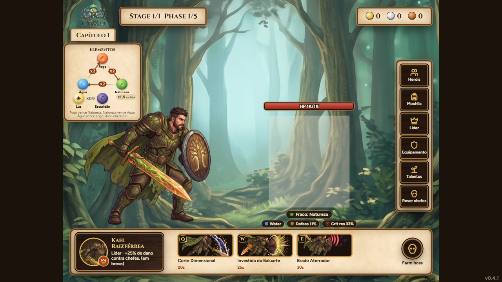
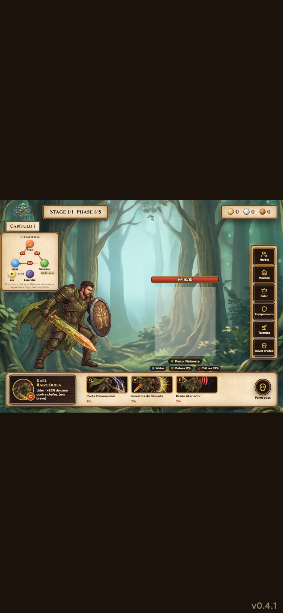
Combate · defesa quebrada
Talentos
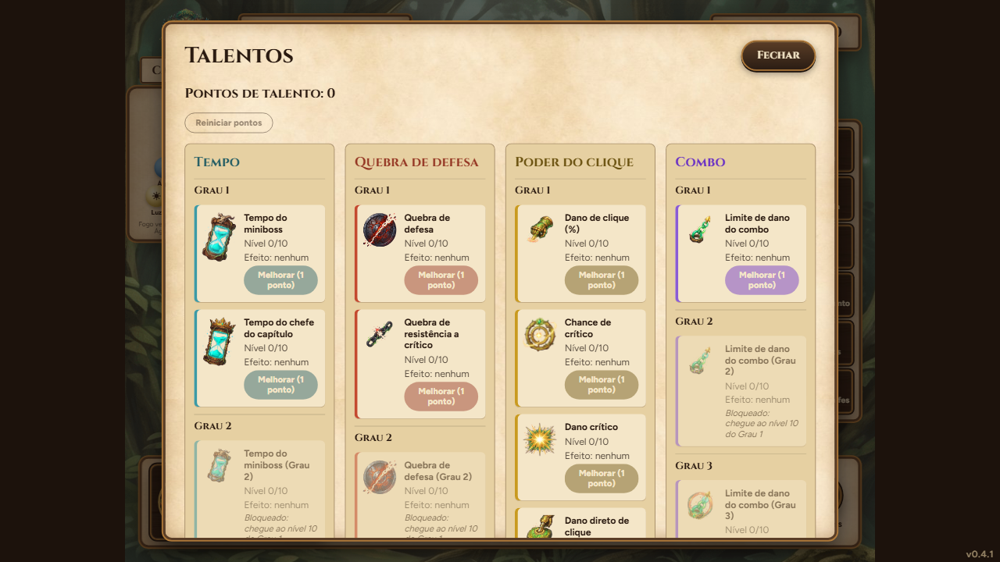
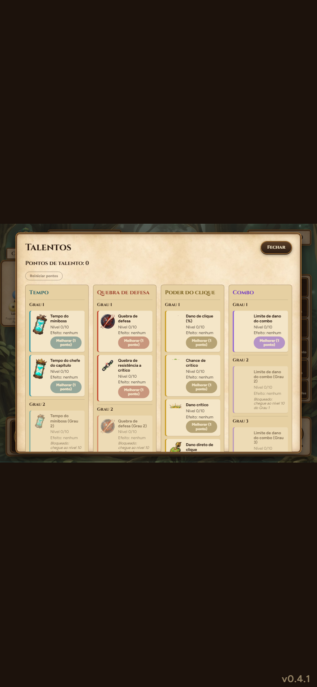
Talentos · coluna Quebra de defesa
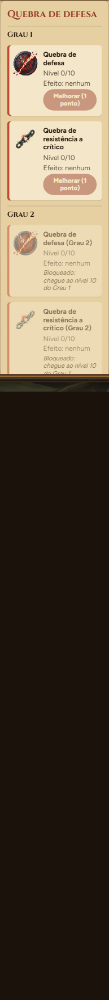
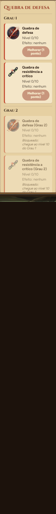
Equipamento · atributos
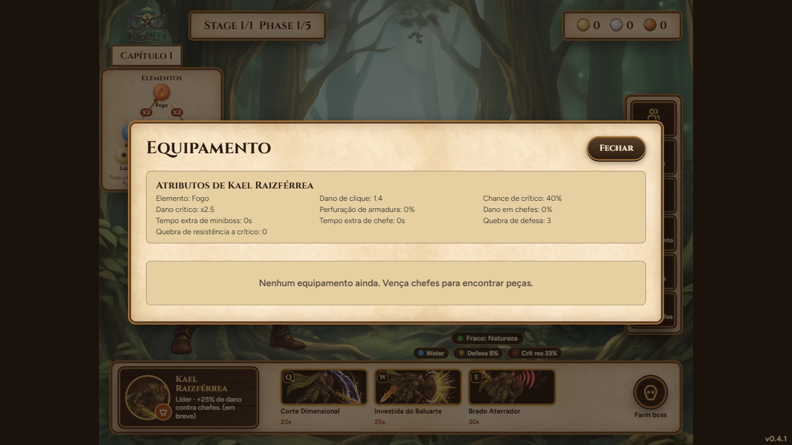
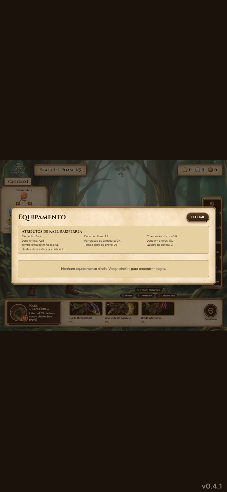
Equipamento · painel recortado
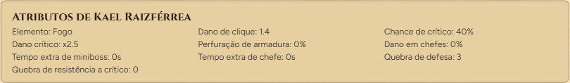
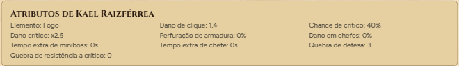
Herói · detalhe da Orina
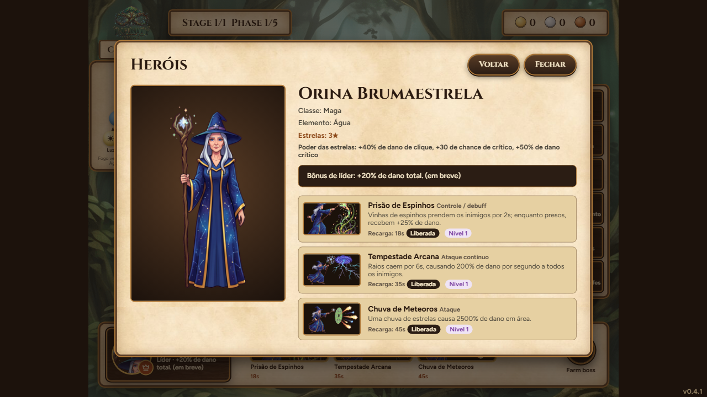
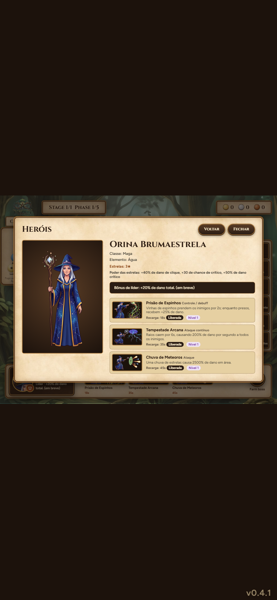
Barra de habilidades
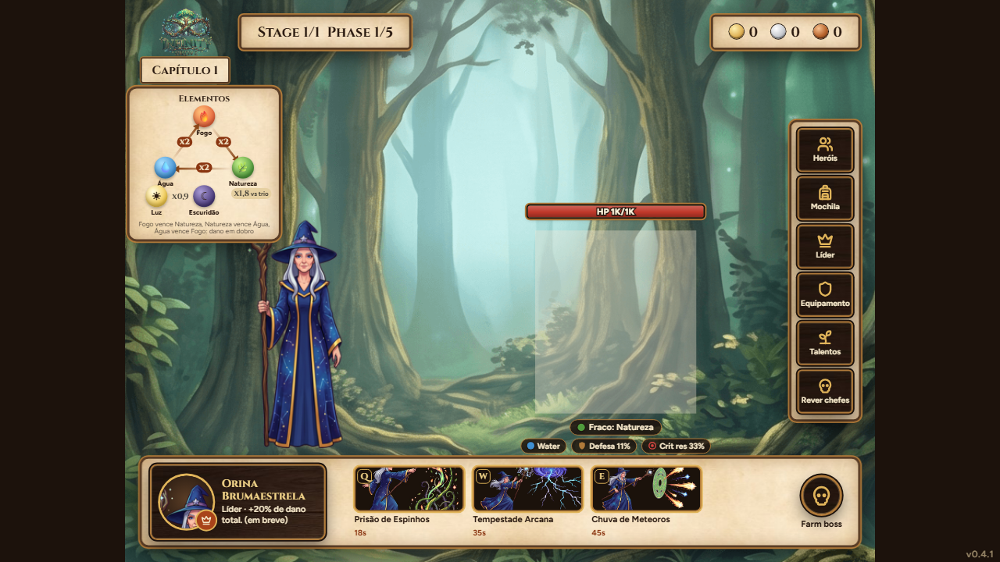
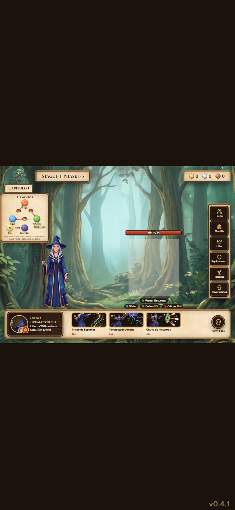
Achados
Nenhum achado.
Sugestões
- ✦Talentos (desktop e celular): o modal rola, então só o Grau 1 e parte do Grau 2 aparecem sem rolar. Se a tela for revisada de novo, vale uma captura com a lista rolada até o Grau 3.
- ✦Linha do inimigo: o chip mostra Water em inglês, enquanto o resto da tela usa Água/Fogo (AD-007). A spec pede Water, mas o texto destoa do painel Elementos; trocar para o nome em português numa feature à parte.
- ✦Atributos: o painel flui em colunas, então Quebra de resistência a crítico fica sozinha no fim da coluna 1, longe de Quebra de defesa (coluna 3). Agrupar as duas quebras na mesma coluna facilitaria a leitura.
- ✦Celular: o jogo aparece em letterbox, e os chips da linha do inimigo ficam com cerca de 6 px de altura de texto. É o comportamento já existente do canvas, não da feature.
- ✦Talentos no celular: ícones de Poder do clique e Combo não carregaram na captura (carregamento tardio das imagens). Não ligado à feature; vale conferir que as imagens recebem o espaço reservado.
Console e recursos
O script das capturas não coleta o console. As 12 execuções (6 telas, 2 larguras) terminaram sem falha e nenhuma captura mostra ícone de 404 nos chips, painel, talentos ou cartões da Orina.